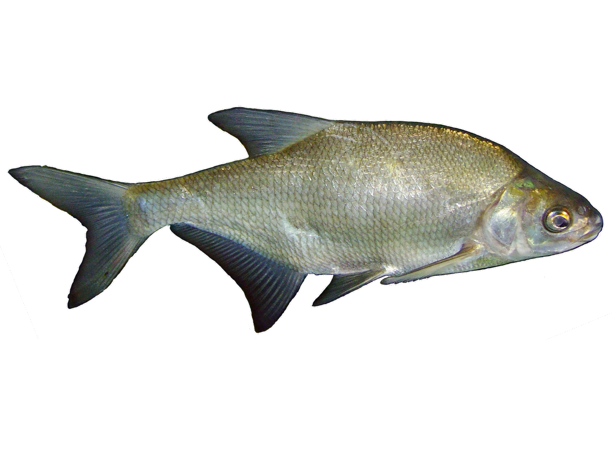

IFMA · Campus Santa Inês
UM UNIVERSO
SOB A SUPERFÍCIE
Diversidade, evolução e importância dos peixes
APRESENTAÇÃO DA EQUIPELucas Nunes · Leonardo Silva · Kervenny · Italo · Thalles · Heitor · Dalessandro José
O que define um peixe?
Uma vida
na água
Respiração geralmente branquial
Locomoção geralmente com nadadeiras
Há exceções e muitas adaptações entre os grupos.

Nem todos se parecem
UMA DIVERSIDADE
EXTRAORDINÁRIA


Rios · recifes · mar aberto · profundezas
Uma história de transformações
Centenas de milhões
de anos de diversificação
Primeiros vertebrados aquáticos
EXEMPLOS DA LINHAGEMClique em um ramo da árvore
LINHAGEM SEM MANDÍBULASLampreiasFeiticeiras
LINHAGEM CARTILAGINOSATubarõesRaiasQuimeras
LINHAGEM ÓSSEAAtunsSardinhasTambaquis
Uma árvore ramificada representa melhor a evolução do que uma escada de progresso.
Três grandes grupos estudados
Como organizamos
essa diversidade?
 01 · AGNATOS
01 · AGNATOSSem mandíbulas
Agnatos: agrupamento tradicional.
Esqueleto cartilaginoso
 03 · OSTEÓCTES
03 · OSTEÓCTESEsqueleto ósseo
A árvore é ramificada, não uma escada. Agnatos · um agrupamento descritivo.
A vida em diferentes ambientes
Um planeta.
Muitos habitats.
01ÁGUAS CONTINENTAISRios e lagos
02RECIFES E COSTASAmbientes costeiros
 03ÁGUAS PROFUNDAS
03ÁGUAS PROFUNDASPouca luz, grande pressão
Explore a estrutura
Como funciona
um peixe?
Estruturas que ajudam o peixe a respirar, perceber e se locomover.

Sobreviver em condições diferentes
Forma, função
e ambiente
 01
01Forma e movimento
Corpos e nadadeiras variados acompanham modos distintos de locomoção.
 02
02Respiração
Brânquias permitem trocas gasosas; a anatomia varia entre espécies.
03Percepção da água
A linha lateral detecta movimentos e vibrações, ajudando o peixe a localizar presas.
Cada espécie tem seu papel
Conexões que
sustentam a vida
 BASE DO ECOSSISTEMAProdutores e pequenos organismos
BASE DO ECOSSISTEMAProdutores e pequenos organismos CONSUMIDORESPeixes em diferentes níveis
CONSUMIDORESPeixes em diferentes níveis PREDADORESRelações dependem do ecossistema
PREDADORESRelações dependem do ecossistemaEsquema conceitual: as relações dependem do ecossistema escolhido.
Um equilíbrio sob pressão
Mas esse equilíbrio
está ameaçado
Sobrepesca, captura acidental, poluição e perda de habitat pressionam as populações.
01Sobrepesca
02Captura incidental
03Poluição
04Destruição de habitats
Quando o ambiente muda
A vida também muda
PRESSÕES AMBIENTAIS

Exemplos ilustrativos de ambientes distintos — não são o mesmo local.
AMBIENTES E IMPACTOS
As imagens mostram ambientes diferentes, não o mesmo lugar em momentos distintos.
Resíduos no mar podem ferir animais, ser ingeridos e degradar habitats.
Os impactos variam conforme a região e as atividades humanas.
Um exemplo que merece atenção
TUBARÃO-
ANJO
Peixe cartilaginoso de corpo achatado e nadadeiras peitorais largas, adaptado à vida junto ao fundo.
Maquete 3D interativa
"Cação" não identifica uma espécie.O nome científico e a distribuição precisam corresponder ao animal representado.
Estudo de caso · Atlântico Sul
Tubarão-anjo-
espinhoso
Squatina guggenheim


IUCN · 2018EM
PERIGOSquatina guggenheim
PERIGOSquatina guggenheim

Imagem ilustrativa da pescaria; não mostra esta espécie.
DECLÍNIO DOCUMENTADO · NOAA
85%queda de abundância
em águas brasileiras
em águas brasileiras
36–47%queda de biomassa
na zona Argentina–Uruguai
na zona Argentina–Uruguai
Imagem: Wikimedia Commons · dados sobre a espécie: NOAA Fisheries e IUCN.
Conservar é proteger os ambientes
Três frentes.
Um objetivo: vida
HABITATS
Proteger áreas essenciais para alimentação e reprodução.
PESCA
Aplicar medidas de manejo adequadas à espécie e à região.
CIÊNCIA
Pesquisar, monitorar populações e identificar capturas.
Conhecer é o primeiro passo
Informação que
vira ação
Descarte corretamente e evite plástico descartável.
Procure saber a origem dos produtos pesqueiros.
Conheça o site, as fichas e as publicações do projeto.

IFMA · Campus Santa Inês
Preservar os peixes é preservar
a vida nos ambientes aquáticos.
Conhecer. Compreender. Conservar.
Obrigado pela atenção